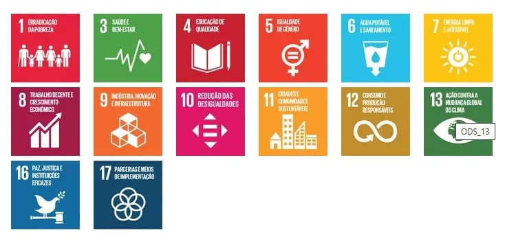

Líder global em construção leve e sustentável, a Saint-Gobain projeta, fabrica e distribui materiais e serviços para os mercados de construção e indústria. Suas soluções integradas para a reforma, construção leve e descarbonização da construção e da indústria, são desenvolvidas por meio de um processo de inovação contínua e promovem a sustentabilidade e performance. O compromisso do Grupo é guiado pelo seu propósito, “MAKING THE WORLD A BETTER HOME”. No mundo todo, somamos €47.9 bilhões em vendas em 2023, contamos com mais de 160 mil colaboradores em 76 países e temos como compromisso alcançar a Neutralidade de Carbono até 2050.
No Brasil, contamos com 58 fábricas, 51 centros de distribuição, 2 mineradoras, 67 lojas, 8 escritórios, 1 centro de pesquisa e desenvolvimento e mais de 12 mil colaboradores.
Fundada durante o reinado de Louis XIV na França, a Saint-Gobain começou como Manufatura Real de Vidros, revolucionando a produção de vidro.
A popularidade dos vidros espelhados garantiu a prosperidade da empresa, que se expandiu e monopolizou a fabricação de vidro.
A expansão internacional foi acelerada e o vidro se tornou um material de construção importante na arquitetura moderna.
A Saint-Gobain consolidou sua posição no mercado internacional, com uma forte presença no Brasil, fornecendo materiais para grandes obras de infraestrutura.
Atualmente, a Saint-Gobain é uma gigante global, focada na inovação e sustentabilidade, com soluções aplicadas em edifícios, transportes e diversas indústrias.
https://github.com/neicyr/ADM---SAINT-GOBAIN/blob/main/presen%C3%A7a%20global.jpeg?raw=trueDesde o surgimento na França no século XVII, a Saint-Gobain expandiu os negócios, desenvolveu diferentes soluções e realizou inúmeras aquisições, além de ter crescido em diversos territórios.
Hoje em dia, presente no mundo todo, apresenta um portfólio de produtos muito diversificado e que atende demandas de diferentes mercados, sendo eles o de indústria, o de construção e o de mobilidade.
Os materiais e soluções da Saint-Gobain são encontrados em todos os lugares em que vivemos e em nosso dia a dia: edifícios, transportes, infraestruturas, bem como em muitas aplicações industriais. Eles proporcionam conforto, desempenho e segurança ao mesmo tempo em que atendem ao propósito de uma construção sustentável.
Desenvolvidas por meio de um processo contínuo de inovação, nossas soluções integradas proporcionam sustentabilidade e desempenho diários, atuando na reforma de edifícios corporativos e habitações familiares, por meio de uma construção leve e com foco na descarbonização da construção e da indústria.
Desta forma, contribuímos para a redução das emissões de carbono, alavancando a eficiência dos recursos e aumentando a circularidade. A Saint-Gobain acredita no progresso e busca ser um divisor de águas que melhora a saúde e o bem-estar individual e coletivo.
Desde o fim da década de 1930, quando a Saint-Gobain desembarcou por aqui, a história do Grupo no Brasil tem sido marcada por aquisições, fusões, expansão e conquista de novos mercados. Com um território de dimensões continentais, uma crescente urbanização e grande necessidade de infraestrutura, o país se tornou um dos mercados mundiais mais importantes para a companhia.
Todas as atividades do Grupo estão representadas no país, com soluções inovadoras de alto valor agregado, como: materiais de construção de diferentes aplicações e propriedades para a arquitetura de interiores e exteriores; vidros inovadores para construções ou para o mercado automotivo; materiais de alta performance para as indústrias de tecnologia; distribuição de materiais de construção e tubulações para redes de água e esgoto.
Atualmente, além de grandes marcas atuando nos mercados de construção, indústria e mobilidade, a Saint-Gobain Brasil possui um parque fabril de 58 unidades, 79 lojas e o único Centro de Pesquisa e Desenvolvimento do Hemisfério Sul.
https://github.com/neicyr/ADM---SAINT-GOBAIN/blob/main/nossa%20historia.png?raw=true alt="Nossa história" style="display: block; margin: 0 auto;" width="auto">Todas as nossas políticas e compromissos têm como base a fundamentação ética: os Princípios de Comportamento e Ação.
Eles se dividem em 5 Princípios de Comportamento:
1. Compromisso profissional;
2. Respeito pelas pessoas;
3. Integridade;
4. Lealdade;
5. Solidariedade.
E 4 Princípios de Ação:
1. Respeito pela legalidade;
2. Respeito pelo meio ambiente;
3. Respeito pela saúde e segurança no trabalho;
4. Respeito pelos direitos dos funcionários.
Nossos pilares de Responsabilidade Social Corporativa guiam nossas ações para reduzir os impactos ambientais e sociais de nossas atividades e soluções.
Os fundamentos chave de nossa missão são desenvolver e distribuir soluções mais sustentáveis para criar espaços mais confortáveis que garantam o bem-estar dos indivíduos e da sociedade como um todo.
1. ÉTICA NOS NEGÓCIOS
Apoiar os colaboradores do Grupo no exercício justo e responsável de suas profissões;
Trabalhar de forma justa e ética com fornecedores e em toda a cadeia de suprimentos.
2. ENGAJAMENTO DOS COLABORADORES E DIVERSIDADE
Criar um ambiente de trabalho engajador para todos os funcionários;
Fomentar a inclusão e promover a diversidade.
3. SAÚDE E SEGURANÇA EM TODA A CADEIA DE VALOR
Garantir a saúde e a segurança dos funcionários, trabalhadores temporários e terceiros nas instalações da Saint-Gobain;
Garantir a saúde e segurança dos nossos públicos externos, em particular clientes e fornecedores.
Contribuindo para um bem comum
4. MUDANÇAS CLIMÁTICAS
Propor soluções que promovam a eficiência energética e a redução das emissões de CO2, e alcançar a neutralidade de carbono até 2050;
Combater os efeitos das mudanças climáticas, em particular para preservar a biodiversidade, e endereçar o número crescente de áreas com escassez de água.
5. ECONOMIA CIRCULAR
Gerenciar recursos com responsabilidade e eliminar o uso de matérias-primas não recicláveis;
Participar do desenvolvimento de uma economia circular: coleta, reciclagem e recuperação de resíduos.
6. CRESCIMENTO INCLUSIVO
Contribuir com os desafios das comunidades locais:
Por meio de uma atividade econômica em sinergia com nossa presença, com nossos mercados e com as nossas organizações nos países;
Por meio da filantropia e do envolvimento dos funcionários.
Não é de hoje que o Grupo se preocupa em implementar medidas voltadas à Sustentabilidade. Em 2003, por exemplo, nos tornamos signatários do Pacto Global da ONU e, em 2015, passamos a nos comprometer com os Objetivos de Desenvolvimento Sustentável da organização.
Nesse mesmo ano, foram definidos alguns objetivos a serem cumpridos até 2025, como a diminuição de 20% das emissões de CO2, a redução de 80% nos índices de descarga de água e menos 50% de resíduos não recuperados.
A partir desses objetivos e dos resultados obtidos ao longo do tempo, foram estabelecidas outras metas para traçar o caminho rumo à neutralidade de carbono.

Como parte da nossa atuação comprometida com o desenvolvimento sustentável e os objetivos estabelecidos até 2030, estamos também trabalhando para contribuir cada vez mais com os Objetivos de Desenvolvimento Sustentável (ODS) estabelecidos pela Organização das Nações Unidas (ONU).
O compromisso da Saint-Gobain com a sustentabilidade é refletido em suas metas de redução de emissões de CO2, uso responsável de recursos e busca pela neutralidade de carbono até 2050.
Confira, abaixo, os objetivos com os quais conectamos nossas ações de responsabilidade social corporativa.
A seguir, apresentamos o organograma da Saint-Gobain, uma estrutura que reflete a organização interna e o compromisso com a inovação, qualidade e sustentabilidade em todos os setores em que atuam.
A Saint-Gobain também reflete aspectos da Teoria Científica de Frederick Taylor em sua gestão, especialmente no que diz respeito à busca pela eficiência e produtividade. A Teoria Científica de Taylor propõe o estudo e a otimização de cada tarefa, o treinamento especializado de funcionários, e a motivação baseada em incentivos. Na Saint-Gobain, esses princípios são aplicados da seguinte forma:
Divisão de tarefas e especialização : Assim como Taylor defende a segmentação de tarefas para melhoria do desempenho, a Saint-Gobain organiza as atividades de seus colaboradores com base em especializações. Cada setor, como pesquisa e desenvolvimento, produção, logística e vendas, tem funções bem definidas. Essa divisão permite uma abordagem mais eficiente e especializada, garantindo que os processos sejam executados por quem possui as habilidades específicas para cada tarefa.
Padronização de processos : Inspirada pelo princípio de padronização de Taylor, a Saint-Gobain desenvolve e aplica processos padronizados em suas fábricas e centros de produção. Com isso, a empresa consegue manter um alto nível de qualidade e uniformidade em seus produtos em diferentes locais. A padronização facilita o controle de qualidade e minimiza a variabilidade nos processos, otimizando recursos e economizando desperdícios.
Estudo de tempos e movimentos : A Saint-Gobain investe em tecnologias e estudos de tempos e movimentos em suas linhas de produção para identificar maneiras de aumentar a eficiência e reduzir custos. O uso de automação, análise de fluxos de trabalho e tecnologias de monitoramento avançadas permite uma avaliação constante e aprimoramento dos processos, proporcionando maior agilidade e precisão, o que está alinhado com a metodologia de Taylor.
Capacitação e treinamento especializado : Taylor defende o treinamento específico dos trabalhadores para que possam executar tarefas de maneira ideal. A Saint-Gobain aplica esse princípio ao oferecer programas de treinamento contínuo para seus funcionários, tanto em habilidades técnicas quanto em práticas de segurança e sustentabilidade. Com isso, os colaboradores estão sempre atualizados e aptos a operar com eficiência.
Incentivos e recompensas : Seguindo a proposta de Taylor de motivar os funcionários por meio de incentivos, a Saint-Gobain oferece programas de reconhecimento e benefícios para colaboradores que se destacam em produtividade e eficiência. Essa prática é voltada para engajar os funcionários e aumentar a motivação, promovendo um ambiente de trabalho onde o desempenho é valorizado e recompensado.
Embora adaptada a Teoria Científica para o contexto moderno e globalizado, a Saint-Gobain utiliza esses princípios de Taylor para manter uma operação eficiente, orientada pela produtividade e pela qualidade. Esta aplicação é essencial para manter a competitividade e a inovação da empresa no setor de materiais de construção.
A Saint-Gobain, como uma das líderes globais em materiais de construção e soluções de alto desempenho, aplica os princípios de Henri Fayol de forma moderna e adaptados ao ambiente corporativo atual. As teorias de Fayol, centradas em funções gerenciais como planejamento, organização, comando, coordenação e controle, ainda são a base de muitas práticas empresariais. Eis como a Saint-Gobain aplica alguns desses princípios:
Planejamento : A empresa utiliza o planejamento para definir objetivos estratégicos de longo prazo, como sustentabilidade e inovação. Esse processo envolve a criação de metas claras para suas divisões e áreas de atuação, além do desenvolvimento de novas tecnologias e produtos ecologicamente responsáveis. Dessa forma, o planejamento em diferentes níveis possibilita a antecipação das tendências do mercado e o alinhamento com as demandas dos consumidores.
Organização : Seguindo o princípio de Fayol, a Saint-Gobain mantém uma estrutura organizacional bem definida, dividida por segmentos e áreas de especialidade, como vidros, cerâmicas, isolamentos e materiais de construção. Essa organização permite maior eficiência operacional e alocação correta de recursos humanos e materiais, favorecendo a execução das atividades.
Comando : A Saint-Gobain adota práticas de liderança com foco na gestão de pessoas, incentivando o desenvolvimento de talentos e a capacitação de seus colaboradores. Inspirada no princípio de comando de Fayol, a empresa procura liderada com uma visão integrada e com foco em resultados, valorizando a comunicação transparente e o engajamento dos funcionários em sua cultura de inovação e sustentabilidade.
Coordenação : A coordenação entre as diferentes áreas e filiais da Saint-Gobain é fundamental para garantir que todos os envios sejam entregues aos objetivos corporativos e à missão da empresa. A Saint-Gobain incentiva a colaboração entre equipes e entre unidades de negócios em diferentes países, promovendo sinergias e facilitando a troca de informações, certificadas à visão global da companhia.
Controle : A empresa aplica mecanismos de controle rigorosos para monitorar seu desempenho em termos de qualidade, segurança e sustentabilidade. Esse controle envolve uma avaliação constante de KPIs (indicadores-chave de desempenho) e o cumprimento de regulamentações locais e internacionais. O controle gerencial é um dos pontos que permite à Saint-Gobain manter sua excelência e garantir que as compras sejam alinhadas com os padrões de qualidade.
Essas práticas evidenciaram a aplicação das teorias de Fayol, mostrando como a Saint-Gobain se modernizou e adaptou esses princípios para gerenciar uma corporação global e complexa.
A Saint-Gobain aplica elementos da Teoria Humanística de Elton Mayo para focar no bem-estar, na motivação e no engajamento de seus colaboradores. A Teoria Humanística enfatiza a importância das relações interpessoais, do ambiente de trabalho e da motivação para a produtividade dos funcionários. Na Saint-Gobain, essa abordagem aparece de várias formas:
Valorização do ambiente de trabalho : A Saint-Gobain investe em ambientes de trabalho saudáveis, confortáveis e seguros para seus funcionários. Seguindo a perspectiva de maio, a empresa entende que as condições físicas e emocionais impactam diretamente na satisfação e produtividade dos colaboradores. Além disso, a Saint-Gobain promove práticas de inclusão e diversidade, criando um ambiente onde os funcionários se sintam respeitados e valorizados.
Incentivo à comunicação e trabalho em equipe : A Teoria Humanística destaca a importância da comunicação aberta e do trabalho em equipe. A Saint-Gobain incentiva a colaboração entre equipes e promove uma comunicação clara em todos os níveis hierárquicos. Esse ambiente cooperativo é alinhado com a ideia de que relações positivas no trabalho aumentam a satisfação e a produtividade.
Programas de desenvolvimento pessoal e profissional : A Saint-Gobain valoriza o desenvolvimento contínuo de seus colaboradores. A empresa oferece programas de capacitação, treinamento e oportunidades de desenvolvimento de carreira, incentivando o crescimento pessoal e profissional. Essa prática reflete a teoria de maio, que afirma que a motivação e a satisfação dos trabalhadores melhoram quando se sentem valorizados e têm oportunidades de progresso.
Foco no bem-estar e qualidade de vida : A empresa possui iniciativas inovadoras para o bem-estar dos funcionários, como programas de saúde mental, atividades de qualidade de vida e benefícios que incentivam um equilíbrio entre trabalho e vida pessoal. Mayo observou que aspectos emocionais e psicológicos afetam a produtividade, e a Saint-Gobain reflete isso ao priorizar o bem-estar holístico dos colaboradores.
Motivação através do reconhecimento : Inspirada pela Teoria Humanística, a Saint-Gobain aplica políticas de reconhecimento e valorização dos esforços, contribuições e dos funcionários. A empresa oferece programas de incentivo e prêmios que permitem o bom desempenho, ou que aumentam a motivação e o engajamento.
Com essas práticas, a Saint-Gobain adota uma abordagem humanística, onde o foco vai além da produtividade e inclui a satisfação e o desenvolvimento pessoal dos colaboradores, alinhando-se aos princípios de Elton Mayo.
A Teoria Comportamental de Maslow , também conhecida como Teoria das Necessidades, se aplica à Saint-Gobain principalmente através da atenção que a empresa dá às diferentes necessidades de seus colaboradores, conforme a posição das necessidades humanas proposta por Maslow. Essa teoria sugere que as pessoas buscam satisfazer suas necessidades em uma ordem de prioridade — desde necessidades básicas de sobrevivência até a realização pessoal — e que, para motivar especificamente, as empresas devem apoiar os funcionários em cada um desses níveis.
Aqui está como a Saint-Gobain atende a esses níveis de necessidades:
Necessidades Fisiológicas : A Saint-Gobain oferece garantias e benefícios que garantem que os pacientes tenham suas necessidades básicas atendidas. Além disso, mantém ambientes de trabalho com condições adequadas, como instalações confortáveis, acesso à alimentação e períodos de descanso, que são fundamentais para o bem-estar físico dos colaboradores.
Necessidades de Segurança : Para atender às necessidades de segurança, a Saint-Gobain investe em políticas rigorosas de saúde e segurança no trabalho, prevenindo riscos e fornecendo condições de trabalho. A empresa oferece benefícios de seguro de saúde, planos de previdência e programas que garantem a proteção e a segurança dos funcionários no ambiente profissional e fora dele.
Necessidades Sociais : Alinhada com o conceito de Maslow de pertencimento e conexão, a Saint-Gobain promove um ambiente de trabalho colaborativo
Necessidades de Estimativa : A Saint-Gobain registra e valoriza as conquistas de seus funcionários, oferecendo programas de reconhecimento, recompensas e oportunidades para crescimento na carreira. Ao valorizar e confiar nas contribuições dos colaboradores, a empresa reforça a confiança e o sentimento de importância e respeito de cada indivíduo, fortalecendo o comprometimento.
Necessidade de Autorrealização : Para atender ao nível mais alto da pirâmide de Maslow, a Saint-Gobain oferece oportunidades de desenvolvimento pessoal e profissional, incentivando os funcionários a alcançar seus potenciais máximos. Programas de treinamento, capacitação, oportunidades para assumir novos desafios e um ambiente que apoia a inovação e o desenvolvimento permitem que os colaboradores busquem a autorrealização, explorando suas habilidades e interesses dentro da empresa.
Ao satisfazer cada um desses níveis de necessidades, a Saint-Gobain adota uma abordagem motivacional abrangente, promovendo não apenas a produtividade, mas também o desenvolvimento e a satisfação pessoal dos colaboradores. Isso reflete os princípios de Maslow, que afirma que a motivação surge na progressão no atendimento das necessidades humanas em sua posição.
Em conclusão, a Saint-Gobain demonstra um compromisso contínuo com a inovação, a sustentabilidade e a eficiência, utilizando uma gestão integrada e fundamentada em diversas teorias clássicas e modernas. A empresa aplica a Teoria Científica de Frederick Taylor , centrada na padronização de processos e incentivos de produtividade, e a Teoria Administrativa de Henri Fayol , que orienta o planejamento, organização, comando, coordenação e controle das operações.
A Saint-Gobain também incorpora a Teoria das Relações Humanas de Elton Mayo , confirmando a importância de fatores emocionais e sociais no ambiente de trabalho, e promovendo a satisfação e o engajamento dos colaboradores. Os princípios de maio refletem-se nas políticas de inclusão e nos esforços para criar um ambiente colaborativo e motivador.
Além disso, a empresa utiliza conceitos da Hierarquia das Necessidades de Maslow , atendendo às necessidades básicas, de segurança, sociais e de autorrealização dos colaboradores. Isso é evidenciado por programas de desenvolvimento pessoal, oportunidades de crescimento profissional e suporte ao bem-estar, reforçando o compromisso da Saint-Gobain com o desenvolvimento holístico de seus funcionários.
Por fim, a Saint-Gobain se alinha aos Objetivos de Desenvolvimento Sustentável (ODS) , assumindo uma responsabilidade ambiental e social robusta, com a meta de atingir a neutralidade de carbono até 2050. Assim, a empresa se destaca como líder em materiais e soluções para uma construção sustentável, promovendo um futuro mais verde e responsável.